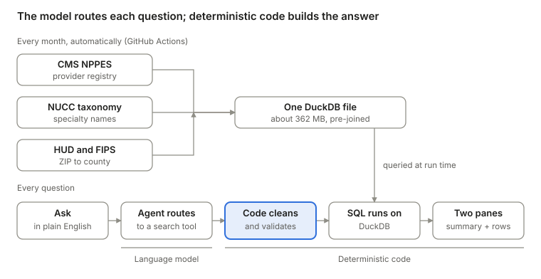
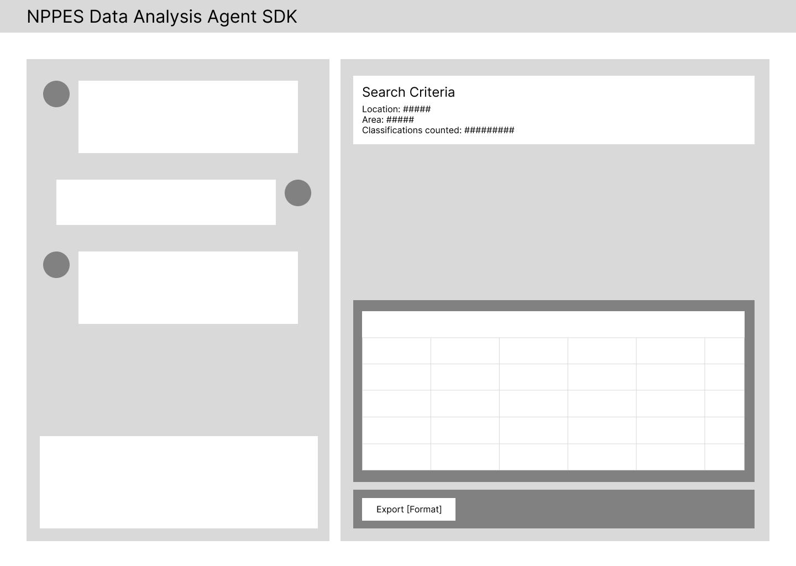
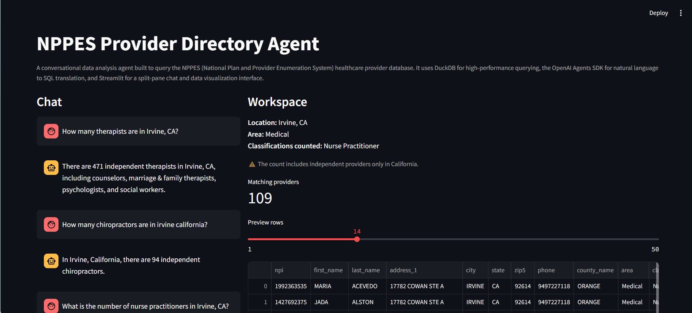
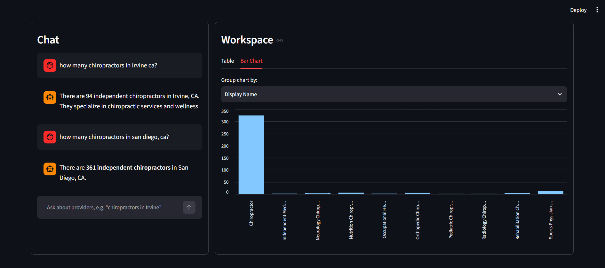
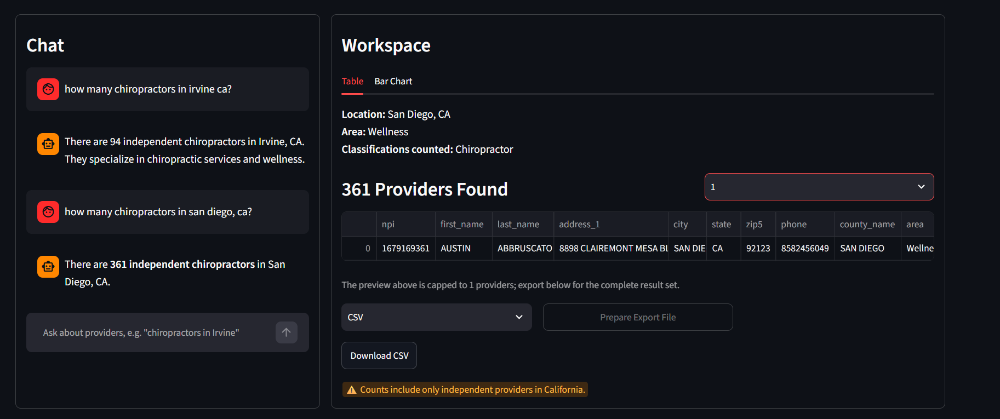
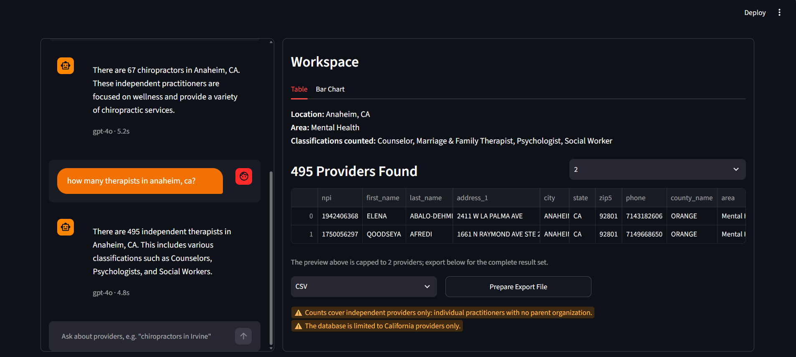
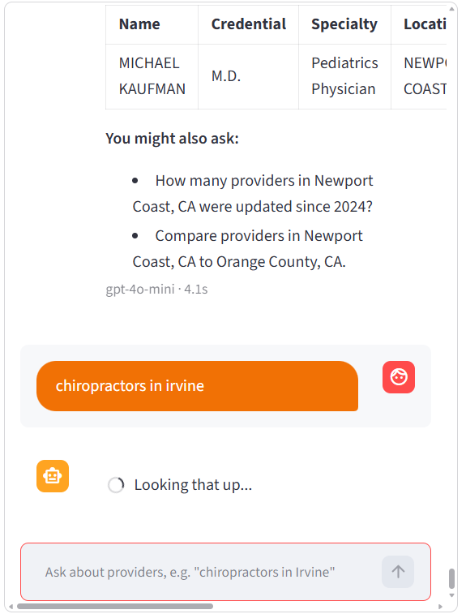

Making 2M+ Provider Records Conversational
A chat tool that turns the nationwide NPPES provider registry into plain-English answers and clean exports.
Overview
I turned a roughly 10 GB federal provider file into a chat tool that a non-technical employee can query in plain English and export from in about five seconds.
Shipped: a live web app, a self-updating data pipeline, and 555+ automated tests. The live app is a tool for the CareNiva team's internal use.
2.18M
individual practitioner records in the nationwide pipeline, rebuilt automatically every month
6
locations comparable side by side in one question
SQL
needed to filter by city, county, ZIP, specialty, provider name, or update year
My role
I worked as both the designer and the analyst, so I could shape the experience and the data behind it together.
- Experience design: the split-pane layout, chat and workspace behavior, error and caveat messaging, export flow
- Data design: the pipeline that merges NPPES, NUCC taxonomy, and FIPS county data into one database
- Agent design: which questions the agent can answer, how it handles ambiguity, and what it is forbidden to do
Team: 2 interns, 1 Supervisor
Problem
Every provider question started with a script.
CareNiva is a telehealth solutions provider. It is not a care provider; it is the software that lets its customers deliver virtual care to their own patients. The platform serves clients in 18 states, recorded 25,000 visits in 2026, and supports urgent care, multi-specialty, and wellness practices. Their clientbase is composed of independent healthcare providers interested in telehealth solutions. For outreach purposes, the team wanted to reach Southern California providers, which meant building lists gathering their public contact data.
The best source is the NPPES (National Plan and Provider Enumeration System) registry, which is the federal CMS (Center for Medicare & Medicaid Services) database that assigns every US provider a unique NPI (National Provider Identifier). It is free and current, but it is a single raw CSV file of roughly 8 to 11 GB. Answering even a simple question meant loading it by hand, filtering it, and joining it to a separate NUCC taxonomy sheet to translate specialty codes into readable names.
Doing the outreach research by hand first showed me exactly what a tool would need to handle, and where the data would mislead people.
Guiding Question
How might we let a non-technical teammate ask a question about providers and get a trustworthy answer, plus a clean dataset, without learning SQL or taxonomy codes?
Research
Before the agent: three weeks of doing it by hand.
I built the first outreach lists myself, in three weekly passes in July 2026. I did this deliberately: I could not design guardrails for data I had not wrestled with.
Week of July 6
Build the dataset key
I filtered the raw NPPES file to Southern California, kept individual providers flagged as sole proprietors with no parent organization, and translated taxonomy codes into specialty names. That produced 176,921 Southern California records, 28,201 of them in Orange County.
Week of July 14
Build the category key
I read the 883-code NUCC taxonomy and sorted it into Medical, Mental Health, and Wellness based on which providers could work with a telehealth platform. I excluded groups that need in-person care, such as labs, pharmacy, and vision. I removed school-based specialties by hand and color-coded the priority groups.
Week of July 20
Patch the gaps
The lists had no street addresses, so I wrote a second script to join back to the original file by NPI, then rebuilt every categorized tab. I also added a flag-reference tab per category with conditional formatting.
It worked, but it was fragile. The research lives in five workbooks with 25 tabs, several marked "v.2" or "OLD - DELETE."
The category key I built by hand
| Category | Taxonomy codes kept | Classifications ranked | Southern California providers | Orange County providers |
|---|---|---|---|---|
| Medical | 260 | 38 | 26,536 | 4,314 |
| Mental Health | 60 | 12 | 62,404 | 10,626 |
| Wellness | 42 | 13 | 12,788 | 2,496 |
Every classification got a High, Medium, or Low priority for telehealth. Of 83,873 individual providers in Orange County, 28,201 (34%) were flagged as sole proprietors, and 17,436 Orange County records matched one of the three categories.
What the manual work exposed
| Blind spot | What it meant for the tool |
|---|---|
| "Independent" is not a field. NPPES cannot say whether a provider works for a health system, so I used sole-proprietor status with no parent organization as a stand-in. | Every count states that it covers independent providers only. |
| NPPES has no email addresses and cannot confirm a license. | The tool says what it cannot tell you; verification stays a separate step before outreach. |
| ZIP prefixes 90 to 92 are a blunt stand-in for a region. My "Southern California" file held 14,804 San Diego records and 4,502 Riverside records. | Search by city, county, or ZIP, backed by a ZIP-to-county crosswalk. |
| Every category was my judgment call about telehealth fit. | A Help tab shows the full taxonomy, and everyday words like "therapist" map to official classifications. |
| Each new question meant a new script and a new set of tabs. | One database, rebuilt monthly, queried by chat. |
| A provider with several specialties is sorted by the first listed one only. | Still open; listed under limitations. |
The manual phase was the research. The agent is what I built from it.
Discovery
The data had six traps, and each became a design requirement.
The manual work showed where the data hurts. Next I tested the obvious shortcuts for a tool, and every dead end shaped the product.
| What I found | What it meant for the design |
|---|---|
| The CMS NPPES API stops at about 1,200 records | It cannot support bulk questions, so the product needs its own database |
| The registry has no county field | Build a ZIP-to-county crosswalk so "Orange County" is searchable |
| Specialties are 10-character taxonomy codes | Map everyday words ("chiro", "therapist", "foot doctor") to official classifications |
| Names and places are ambiguous ("Orange" is a city and a county; "Springfield" is in many states) | The agent must ask, not guess |
| The raw file carries many columns a simple lookup never needs | Show only name, location, specialty, address, phone, and last update |
| The file is republished monthly | Rebuild the database automatically so no one downloads anything |
Principles
Four principles for a tool people have to trust.
A wrong provider count in a healthcare directory is worse than no answer. These principles guided every decision below.
Principle 1
Accuracy over fluency.
The language model interprets the question; deterministic code produces the answer.
Principle 2
Ask in chat, verify in a workspace.
Anyone can type a question, but they should always be able to inspect the rows behind the number.
Principle 3
State what a number leaves out.
Every count carries its scope, such as "independent providers only."
Principle 4
Ask instead of guessing.
When a city, specialty, or name is ambiguous, the agent asks a clarifying question.
Solution
Ask on the left, verify on the right.
The app is a split-pane workspace. On the left, a chat accepts natural-language questions and answers with a short summary and a table. On the right, a workspace shows the full result as a sortable table or bar chart, and exports it as CSV, Excel, or JSON.

The language model only interprets the question and picks a tool. Cleaning, validation, SQL, and the summary are code, so the same question returns the same answer every time.
Decisions
Six decisions that made the numbers trustworthy.
Decision 1
Let the model route, never write the answer.
Early on, model-written summaries were inconsistent and sometimes invented details. I moved the summary and table formatting into structured, deterministic flows, so the model's only job is to understand the question and call the right tool. Trade-off: answers sound less conversational, and I accepted that for accuracy.
Decision 2
Stop the agent from dropping the specialty.
In comparison questions, the model could drop the specialty filter and return counts for every provider type. I gave comparisons their own schema parameters so the filter is always required, and regression tests check that the specialty survives.
Decision 3
Say no to the questions that break the tool.
Whole-state comparisons (California vs. Texas) sent the agent into repeated retries that exhausted its context window. I blocked them explicitly and capped comparisons at six locations. Trade-off: less flexibility, but the tool stays fast and predictable.
Decision 4
Ask when a place or name is ambiguous.
"Orange" is both a city and a county, and "Springfield" exists in many states. Instead of guessing, the agent lists the top six candidates by population, names the ones it left out, and asks the user to pick. My tests showed why: "therapists in Orange" returned 588 for the city, while "Orange County" returned 6,404.
Decision 5
Put the caveat next to the number.
A count is only useful if you know what it covers. Every result states its scope, such as "independent providers only." Comparisons also warn users not to add column totals when one place sits inside another, like Irvine inside Orange County.
Decision 6
Design the export around browser limits.
Streamlit cannot start a background job after a click, so downloading needs a "Prepare export" step first. I kept that step, disabled the button once the file is ready to avoid confusion, and capped exports at 100,000 rows so large searches cannot crash the browser.
Iteration
From gray boxes to a working tool.
I designed in layers: layout first, then behavior, then polish. Each round of screenshots below came from testing the build with real queries.
Wireframe: settle the structure

First build: prove it works

Add a chart and tame the workspace

Fix export and add safeguards

Polish the conversation


Results
14 real questions, 555+ automated checks.
I tested the agent with 14 questions written in everyday language, including vague ones. These are the ones that taught me the most.
| Question | Answer | What it proves |
|---|---|---|
| "How many therapists are in orange?" | 588 (Orange city) | Reads a bare place name as a city |
| "...in orange county, CA?" | 6,404 | Distinguishes county from city |
| "...in orange county?" (no state) | 6,404 | Defaults to California when state is missing |
| "...in Austin, Texas?" | 3,343 | Works for any city, state |
| "...in Los Angeles and Irvine?" | 6,412 vs. 465 | Compares two cities side by side |
| "...therapists in Corona, CA?" | 216 | Maps "therapist" to four official classifications |
| "Mental health providers in Orange County, with classification therapist" | 6,571 | Combines category and classification filters |
| "Mental health counselors in zip 92881" | 6 | Handles ZIP code searches |
Behind the app, 555+ automated tests guard the risky parts: SQL injection prevention, wildcard escaping, specialty retention, overlap detection between nested places, and isolation of each user's API key.
Cross-check against my manual work
The agent counts 10,614 mental health providers in Orange County, and my hand-built Orange County mental health sheet has 10,626. A 12-record gap (0.1%) gives me confidence in both. Ensuring the same NPPES release is used could address this.
Before and after
The manual route took three weekly passes to produce category lists for Orange County and Southern California. Now a new slice, such as a different city, county, or specialty, is a question instead of a script.
Impact at CareNiva
By the end of the internhip, the first version of the web app was shipped to CareNiva's engineering team for review & deployment. We've received great feedback on it, with the Supervisor sharing that this tool would "help them to save significant time in searching for relevant clients."
Reflection
What I learned, and what is still open.
Trust is the real interface.
In a data tool, the hardest UX problem was not the layout. It was making sure a person could believe the number, so I spent more time on scope labels, ambiguity handling, and guardrails than on visuals.
Constraints are a design material.
Every "no" (no whole-state comparisons, capped exports) made the tool faster and more predictable. The agent got better when I gave it less freedom.
Data design is UX design.
County search, plain-language specialties, and a pre-joined database were backend work, but they decided what questions people could ask at all.
Known limitations
- The live app covers California; the nationwide dataset currently runs only locally.
- I have not yet tested how the agent handles typos and unusual phrasing.
- Asking for tables by whole wellness or medical category still has open bugs.
- Multi-location results can be inconsistent when specialty aliases differ.
- Each provider is categorized by their first listed specialty only.
Next steps
- Run usability sessions with teammates and measure task time against the old script workflow
- Release the nationwide dataset through GitHub releases so the hosted app can use it
- Add an interactive map of providers and search by month
- Make the interface fully responsive on tablets and phones